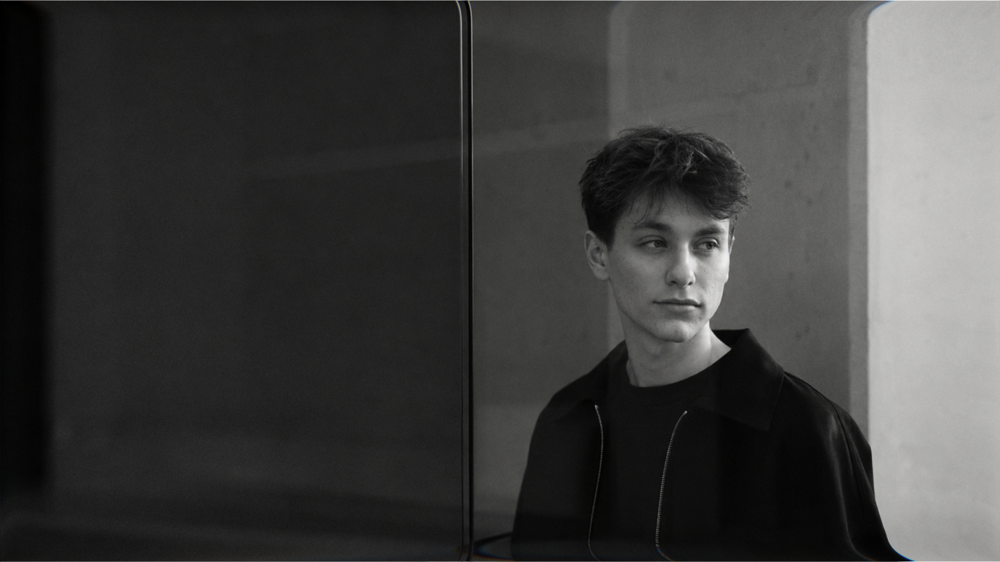

Soul
Сайт для иммерсивного театра, где визуальная подача работает как продолжение сценического опыта: передаёт атмосферу, настроение и вовлекает пользователя ещё до покупки билета.

UX/UI • Websites • Visual Systems
Я помогаю собрать не только визуальную оболочку, но и структуру: что сказать, как показать, в каком порядке выстроить блоки и как сделать взаимодействие с продуктом понятным.
Сайт для иммерсивного театра, где визуальная подача работает как продолжение сценического опыта: передаёт атмосферу, настроение и вовлекает пользователя ещё до покупки билета.

Сайт для иммерсивного театра, где визуальная подача работает как продолжение сценического опыта: передаёт атмосферу, настроение и вовлекает пользователя ещё до покупки билета.

Сайт для иммерсивного театра, где визуальная подача работает как продолжение сценического опыта: передаёт атмосферу, настроение и вовлекает пользователя ещё до покупки билета.

Сайт для иммерсивного театра, где визуальная подача работает как продолжение сценического опыта: передаёт атмосферу, настроение и вовлекает пользователя ещё до покупки билета.
Не каждому проекту нужен одинаковый формат. Иногда достаточно лендинга, иногда нужна полноценная структура сайта, интерфейс продукта или визуальная упаковка бренда. Я подбираю решение под задачу, а не наоборот.
Лендинг или презентационный сайт для продукта, услуги, эксперта или компании. Помогает быстро объяснить предложение, показать ценность и собрать первые заявки.
Многостраничный сайт для компании, сервиса или бренда. Подходит, когда важно подробно рассказать о продуктах, услугах, команде, преимуществах и сформировать доверие.
UX/UI-дизайн для веб-сервисов, приложений, личных кабинетов и digital-продуктов. Здесь фокус не только на визуале, но и на логике экранов, сценариях пользователя и удобстве взаимодействия.
Фирменный стиль, презентации, коммерческие материалы и визуальные элементы, которые помогают бренду выглядеть цельно в digital-среде.
Расскажите о задаче —
я предложу, с чего начать